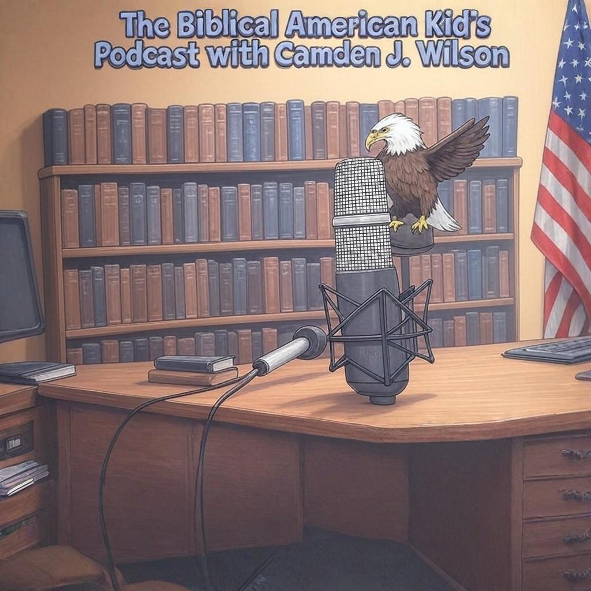

The Biblical American Kids Podcast
Faith. Freedom. Fun. From a Kid’s Point of View!
The Biblical American Kid’s Podcast is hosted by Camden J. Wilson, a young voice with a
big heart for Jesus, the Bible, and the United States of America. This podcast is
created by a kid, for kids—and it’s packed with truth, courage, and character.
Each short, action-packed episode includes:
• Bible stories and lessons with simple, powerful truths
• American history and heroes from a biblical and patriotic view
• Fun facts, memory verses, and encouraging challenges for kids
• Faith-based values every family can stand on
Perfect for Christian families, homeschoolers, Sunday school groups, or car rides,
Camden helps kids learn how to be brave, kind, and biblical patriots in today’s
world—just like the heroes of faith and freedom who came before us.
Tune in each week on the Revealed Radio Network, and let your kids discover how they,
too, can be Biblical American Kids who stand for truth!